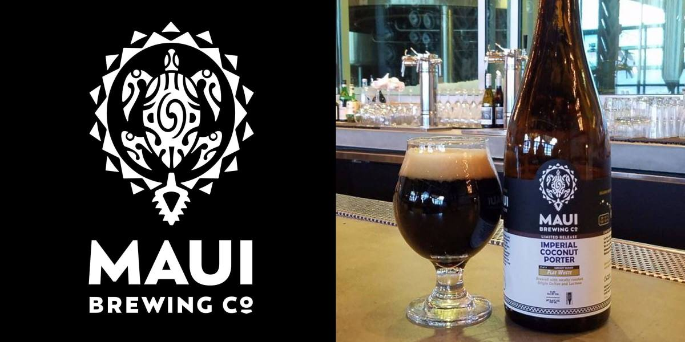

Maui Brewing Co. Imperial Coconut Porter

Description
Maui Brewing Co.’s Imperial Coconut Porter won a gold medal at the 2016
Great American Beer Festival in the Field Beer category. A deeper, more
intense version of the brewery’s flagship Coconut Hiwa Porter, Imperial
Coconut Porter is brewed with hand-toasted coconut and offers subtle
hints of cacao and coffee. The rich, slightly sweet, and malty ale pours
with a dark tan head and drinks with a silky smooth yet warming finish.
Ingredients
Malts & Adjuncts
- 8.5 lb. (3.86 kg) pale malt
- 3.0 lb. (1.36 kg) Golden Promise malt
- 1.5 lb. (680 g) Munich malt
- 12.8 oz. (363 g) Simpsons Chocolate malt
- 11.2 oz. (318 g) rolled oats
- 9.6 oz. (272 g) crystal malt, 77°L
- 8.0 oz. (227 g) Weyermann Caramunich Type II malt
- 8.0 oz. (227 g) brown malt
- 8.0 oz. (227 g) caramel malt, 120°L
- 8.0 oz. (227 g) cane sugar @ 20 min
Hops
- 0.5 oz. (14 g) Cascade, 6.2% a.a. @ 90 min
- 1.0 oz. (28 g) Cascade, 8.0% a.a. @ 20 min
Yeast
Additional Items
- 2 lb. (907 g) toasted coconut, secondary
Steps
- Mash grains 60 min at 152°F (67°C).
- Boil 90 min, adding hops and cane sugar as indicated.
- Ferment at 65°F (18°C) until final gravity is reached.
- Rack to secondary and add toasted coconut.
- Allow to condition 7 days before bottling or kegging.